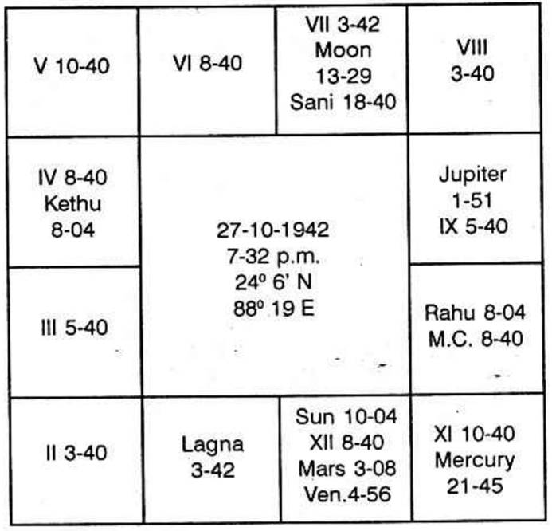

The horoscope is as follows:
Moon Dasa balance 7 years 4 months 20 days.

For high school and College studies which need regular attendance to learn the subjects by hearing the lectures from the beginning to the end, one is to judge the houses 4 and 11. If one has to work himself, do research, submit thesis etc., or if one is to leave his native place, remain in a hostel in the foreign land, leaving his kith and kin and enjoying new surroundings environments, one is to judge the houses 9 and 12 and to come out successful, 11th house significator should also be the significator of either 9th or 12th house or both.
Here lagna is 3 42' Scorpio. 9th house extends from 5 40' Cancer to 8 40' Leo. Occupant is stronger than owner. According to K.P occupant of a constellation is stronger than the lord of the constellation. Constellation is stronger than the sign. Occupant of a sign is stronger than the lord of the sign. Planets conjoined with or aspected by a planet gains the strength to offer those results which those planets signify. Thus a planet becomes the significator of a few matters. The source of the result is shown clearly by the Bhava - house occupied by the planet and the house or houses which it owns (owner of a house means owner of the sign where the cusp or cusps of a bhava or bhavas fall).
Rahu is the occupant of the 9th Bhava. Its constellations are Arudhra, Swathi and Sathabisha. Sun and Kethu are in Rahu's star.
Moon is the lord of the sign where 9th cusp falls. Rohini, Hastham and Sravanam are governed by Moon. Moon, Sani and Mercury are in Moon's star.
When so many planets indicate a result, it means that they are connected with this, 9th house results. If they happen to be the significator of 7th house also, it means, it is the 11th to the 9th. 9th house indicates the father of the native; hence the 7th house, which is the 11th to 9th indicates success in father's attempts, cure from the disease and realisation of his ambition, other than what it denotes the native, i.e. to have a partner in life or to enter into a contract with another. Moon is in 7. It is in its own constellation. So Moon indicates 9th and 7th house matters. Saturn is in 7. Saturn is in Moon's star which occupies 7th house. So Saturn presages matters, signified by 7th and also the 9th house. Therefore during Moon and Saturn sub periods, not only the native will enjoy 7th and 9th house matters, but the native's father will achieve his aim.
As regards overseas, judge the house 12 as it promises, separation from family, living in new surroundings and environments. 12th house extends from 8 40" Libra to 3 40' Scorpio. Sun is deposited in the 12th house.
Now one should remember that in everybody's horoscope there are the houses 3, 9 and 12. There must be few significators of 3, 9 and 12 at least two. Why? Any one planet may own the houses 3 and 12 or 9 and 12 and the other can own the third house. These two planets may not have any planet in their constellations and also no planet in these 3 Bhavas. Then only these two planets will be the owners and significators. When every individual have got at least 2 planets, why should not everybody make long journeys, go overseas and stay in the foreign land during their conjoined periods and sub periods. Majority do not go overseas. Simply to satisfy themselves, just like what I did when I was very young, they can take a big world map, spread it on the ground. Then stand where Africa is shown. Say, I am in Africa. Take away the footsteps, keep them in Australia map and say "I am now in Australia". Lift your legs and keep where America is drawn. Say "I am now in America". That is all. But the surrounding and environments remain the same. One can go only when the sub lord of the 12th cusp is connected in any manner with 3rd or 9th house; preferably 9th house.
In this chart, 12th cusp is in 8 40' in Libra. The constellation is ruled by Rahu; the sub is also governed by Rahu. Rahu is in the 9th Bhava. If he would have been born one minute later, the sub lord will be Jupiter who is in the 8th Bhava (in his own constellation) which is Vyaya to the 9th house, in which case he cannot go overseas.
If twins are born, one with Rahu as the sub lord of the 12th house cusp and the other twin with the sub lord of the 12th cusp as Jupiter, then even though
(1) The planets are in the same bhava
(2) Dasa and Bhukti same
(3) Ashtaka Varga same
(4) Gochara same
One enjoys and the other is disappointed.
When two people have the same chart with less than ½ a degree differences in lagna position one is able to differentiate by applying K.P. As Rahu is the lord of the sub of the 12th cusp, this native will and must live in a foreign place.
When Rahu is the occupant of the 9th house in the constellation of Kethu in 3 it is connected with land journeys, and long journeys.
Hence this native has got the opportunity to go overseas. Now comes the question of finding out the time of event. It will be Rahu Dasa, Moon Bhukti, Saturn Anthra. Consider the ruling planets at the moment of judgement.
Today it is Thursday. It is ruled by Jupiter. As a node - Rahu - representative Jupiter by occupying his sign, take Rahu Dasa.
Now the lagna that is rising in the East is 12 30'. It is Saturn's sign and Moon constellation as the time is 6 - 51 a.m. on Thursday 23 - 1 - 1969 at Madras. Hence Rahu acting as an agent of Jupiter, Saturn and Moon are the significators (star is also Uthrapadra where Moon transits and it is Jupiter sign Saturn star).
Hence he will go overseas during Rahu Dasa, Moon Bhukti, Saturn Anthra, Third week April 1973.